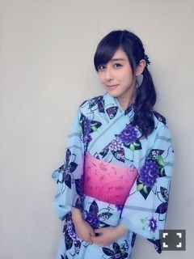
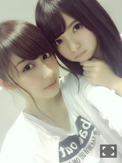
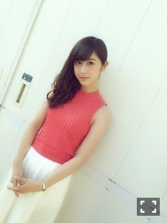
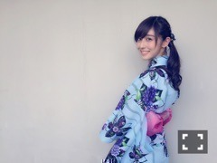

| 2015/08 02 Sun | 斎藤ちはる 握手会！赤と青がテ ーマ。(´>∀<｀)ゝ |
ちはるーむへようこそ(﹡ˆ ˆ﹡)

テストも無事終わり、夏休みに入りました！！
単位は...取れてたら幸せ...
ってくらいに思っとくね...( ;o; )笑
単位取れなかったときに落ち込みすぎないように。保険かけとく。
先週は京都にてセブンイレブンライブ、全国握手会、個別握手会をやらせていただき、
今週は名古屋でやらせせていただきました！
＊京都、全国握手会
相手は飛鳥♡

sweetのレギュラーモデルになり、
ANNA SUIのビジュアルモデルになった飛鳥！
sweetめっちゃ好きな雑誌で、よく買うから
飛鳥がそこにレギュラーモデルとして活躍する姿が見られるのが本当嬉しいよ( ;o; )♡
ANNA SUIのモデルも最初聞いた時びっくりしたしそれより嬉しかったな〜♪
本当すごいよ飛鳥！おめでとう！！！
＊京都、個別握手会

tops: Lily Brown
bottoms: The Virgnia
この二つのブランドが大人っぽくて、それでいて個性もあってお気に入り♡
ガウチョパンツは麻が入っていて爽やかな夏らしい素材なんだ！！
＊名古屋、全国握手会
若月とペア♡
斎藤ナマステで若月には迷惑かけたなあ。笑
若月の、可愛い女の子の部分と
かっこいい男の子の部分を垣間見れた握手会でした♡
勉強になった...！！！
さすが若月...！！！
＊名古屋、個別握手会
水色の浴衣♡
今年浴衣初めて着た！！
夏って感じがしていいね〜

755で、赤とピンクと水色、どの色がいい？と聞いて、水色に決定しました！！
夏らしい水色が人気だったよ〜♪
水色の浴衣だから、
back numberさんの「わたがし」のMVの
山本美月さんみたいになれたらなーって
密かに思ってました...♡
浴衣は自分で着付けて、帯も締めたんだ！
大人の女性に一歩近づいた感じ(﹡ˆ ˆ﹡)笑
浴衣も褒めてくれてありがとう♡
先週と今週の握手会に来てくださった皆さん、本当ありがとうございました！！！
久しぶりの握手会はやっぱり楽しくて、これからもこうして皆さんとずっと会いたいなーって思ってました。
初めましての方も、いつも来てくださる方も
この出会いはかけがえのないものだね♡
また会いに来てね\( ˆ ˆ )/
ツアー始まる！！！
頑張る！！！
来てくれる皆さん、赤と青のサイリウム持ってたらすぐ見つけるよ♡
待ってるね〜♪
載せたかった写真がたくさんあるや...
またブログ更新するね(﹡ˆ ˆ﹡)
とりあえず来週のベマーズは見逃すな...！！！
ベルサイユ音楽学校の花吹雪舞(はなふぶき まい)を演じてます。
ふふ。誰だかわからないなんて言わないでね。笑
今日はかき氷三杯余裕だった。
いちご練乳 いちご練乳 抹茶練乳。
でもずーは五杯だった。
負けた。
斎藤ちはる